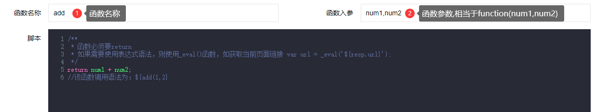

高级应用
自定义函数
自定义函数介绍
SpiderFlow 在服务端使用 Nashorn 执行自定义 JavaScript。你可以在脚本中处理参数、调用其他自定义函数，再用 return 把结果交回流程。
定义自定义函数
在左侧「自定义函数」中新增函数。以 add 为例，函数名填 add，函数入参填 a,b，脚本中填写函数体。
return a + b;
在流程中调用
- 在「执行函数」节点中填写
${add(1,2)}，流程运行到该节点时会调用函数。这个节点适合等待、写日志等操作。 - 需要使用返回值时，在「定义变量」节点中把变量名填为
total，变量值填为${add(1,2)}。后续节点用${total}读取结果3。
脚本可用功能
| 来源 | 功能 | 用法 |
|---|---|---|
| JavaScript 内置 | JSON、Math、Date、RegExp、字符串和数组方法 | JSON.parse(text) 解析 JSON，Math.round(value) 取整，names.join(',') 拼接数组 |
| Nashorn 内置 | Java.type()、Java.to()、Java.from() | 访问 Java 类，在 JavaScript 数组与 Java 数组之间转换 |
| Nashorn 内置 | print()、load()、loadWithNewGlobal() | 写入脚本引擎的输出流，或加载其他脚本 |
| SpiderFlow 提供 | _eval() | 用当前流程的变量和内置函数计算 SpiderFlow 表达式 |
| SpiderFlow 提供 | console | 将消息写入流程日志 |
例如 _eval('${title}') 读取当前流程的 title 变量，_eval("${string.upper('hello')}") 调用 SpiderFlow 的字符串函数并得到 HELLO。
脚本日志
console.log("test log");
console.info("已处理", 3, "条记录");
console.warn("标题缺失");
console.error("保存失败");
console.debug("响应详情", { status: 200 });console.log() 和 console.info() 都写入 INFO 级别。console.warn()、console.error()、console.debug() 分别写入 WARN、ERROR、DEBUG 级别。可以传入多个参数，普通对象和数组会以 JSON 形式显示。
测试流程时在测试窗口的日志区查看，正常运行时在对应任务的日志中查看。DEBUG 消息是否显示取决于日志级别设置。